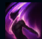
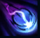
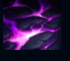
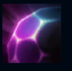
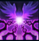

Morgana
| Morgana The Fallen | |
|---|---|
| Release date | 21.02.2009 |
| Class | Catcher |
| Positions | Support |
| Resource | Mana |
| Range type | Ranged |
| Adaptive type | Magic |
| Base statistics | |||
| Health | 560 – 2090 | Mana | 340 – 1360 |
| Health regen. | 5.5 – 12.3 |
Mana regen. | 11 – 17.8 |
| Armor | 25 – 89.6 | Attack damage | 56 – 115.5 |
| Magic resist. | 30 – 38.5 | Crit. damage | 175% |
| Move. speed | 335 | Attack range | 450 |
Prinsă între natura ei divină și cea umană, Morgana și-a legat aripile pentru a rămâne alături de muritori, protejându-i pe cei ce se căiesc și distrugându-i pe cei corupți. Știe că multe dintre tradițiile și legile oamenilor sunt rigide și injuste și luptă în numele adevărului pe care alții încearcă să-l sufoce. Din adâncurile umbrelor, Morgana își folosește puterile, apărându-i pe cei nevinovați și pedepsindu-i pe nevolnici cu flăcări întunecate. Crede cu tărie în puterea celor exilați și marginalizați de a reconstrui o lume dreaptă pentru toți. |  |
SECĂTUIRE Morgana îi secătuiește pe inamicii ei, vindecându-se în timp ce le provoacă daune campionilor, minionilor mari și monștrilor mari. |
||
|---|---|---|---|---|
 |
LEGĂMÂNT ÎNTUNECAT Morgana imobilizează un inamic cu magie neagră, forțându-l să sufere durerea pe care a provocat-o și provocându-i daune magice. |
|||
 |
UMBRĂ CHINUITĂ T Morgana invocă o umbră blestemată într-o zonă, provocându-le daune inamicilor care îndrăznesc să calce în cercul întunecat. Aceștia suferă daune magice în timp, care cresc în funcție de viața lor lipsă. |
|||
|  |
SCUT NEGRU
Morgana apără un aliat cu un scut protector din foc stelar, care absoarbe daunele magice și efectele de neutralizare până când este distrus. |
|||
 |
CĂTUȘELE SUFLETULUI Morgana își dezlănțuie întreaga putere cerească, dezlegându-și aripile și plutind deasupra pământului. Îi prinde pe campionii inamici din apropiere în lanțuri de durere întunecată, primind un bonus la viteza de mișcare când se deplasează spre ei. Adversarii sunt încetiniți și suferă daune inițiale; după o perioadă de așteptare, dacă nu au reușit să se îndepărteze, sunt amețiți. |